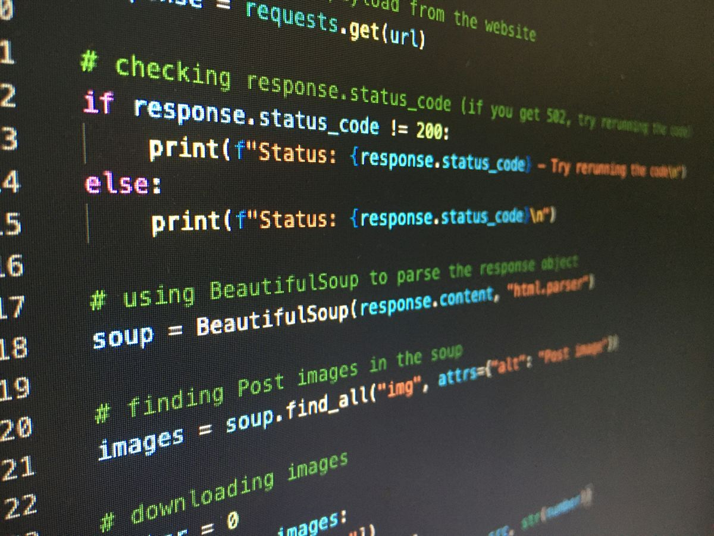
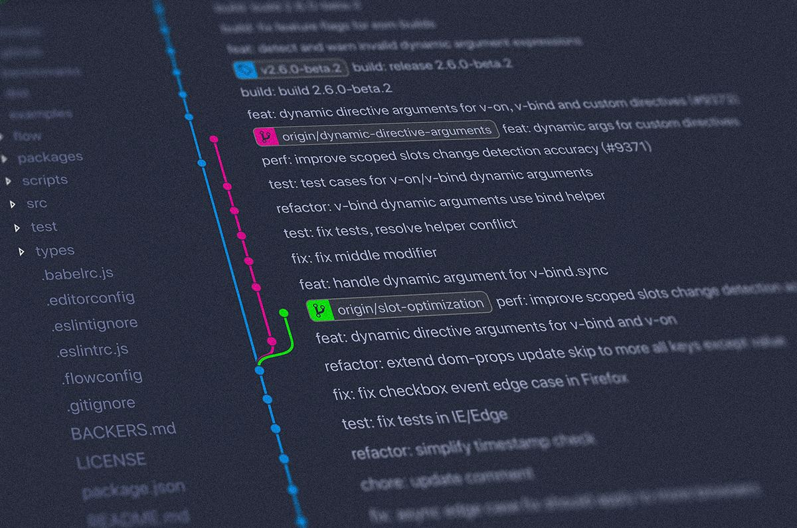

Python desde cero

Para quien nunca ha programado. Empezamos por las variables y acabamos haciendo pequeños programas con funciones.

En Conquer Academy aprendes a programar con cursos online pensados para quien empieza. Hay clases en vídeo y ejercicios para practicar, y si te atascas, un profesor te ayuda.
Somos dos profesores que han usado en su trabajo lo que explican en los cursos. Creamos Conquer Academy para enseñar lo que nos habría gustado aprender cuando empezamos.
Estos son los cursos que hemos publicado hasta ahora.

Para quien nunca ha programado. Empezamos por las variables y acabamos haciendo pequeños programas con funciones.
Aprende a crear tablas, guardar datos y hacer consultas para sacar justo la información que necesitas.
Si quieres ver todos los cursos, haz clic aquí.
Artículos cortos para ayudarte en tus primeros pasos.

Crea tu primer repositorio y sube tu proyecto paso a paso.

Python se lee casi como si fuera inglés y se usa en muchísimos sitios. Te contamos por qué es una buena opción como primer lenguaje.
Si quieres ver todas las noticias, haz clic aquí.